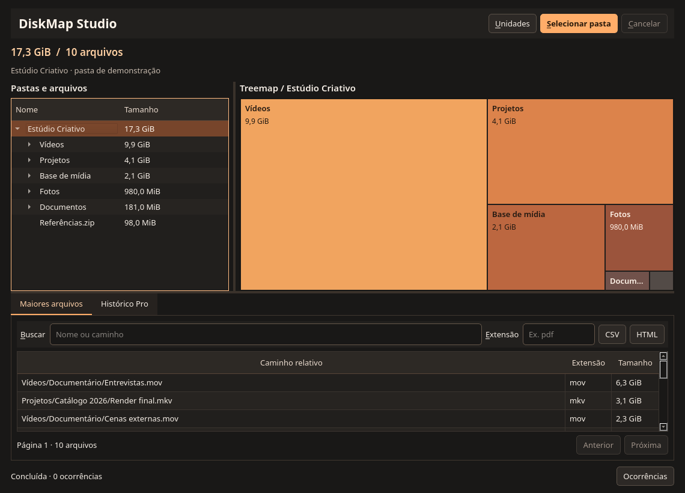

Veja o que ocupa espaço.
Encontre arquivos grandes e analise pastas offline em modo somente leitura.
Baixar DiskMap Studio
Do volume ao arquivo
- Treemap e árvore
- Veja os tamanhos por pasta. Explore o mapa ou navegue pelo teclado.
- Busca e relatórios
- Filtre por nome, caminho ou extensão. Exporte em CSV e HTML.
- Histórico Pro
- Salve snapshots e compare mudanças. Ativação offline. Solicitar licença.
Baixe para seu computador
Grátis para Windows e Linux. Versão 0.1.0.